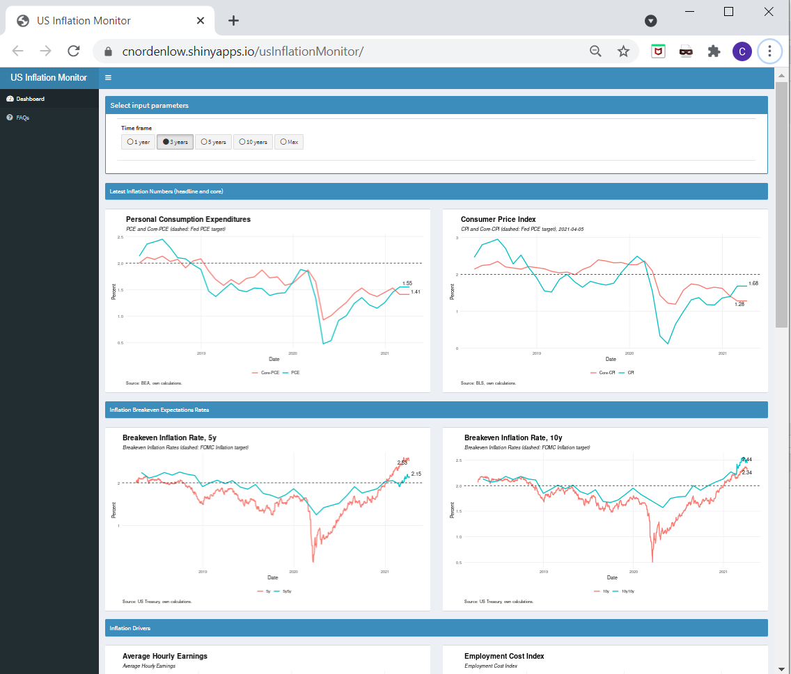

The Shiny app created in this project monitors US Inflation. The monitor includes the latest available inflation print, Breakeven Inflation expectations, various inflation drivers and some Text Mining on FOMC Minutes.
Shiny app can be found here.
The code for the app is available on github.

Methodology
The main purpose of this app is to give a comprehensive picture of US Inflation. To be able to do this, a couple of diffrent data sources are in use.a BLS and BEA both have excellent API:s that are used, while web scraping is used to parse Rates from US Treasury. ALso, the app imports the data from the Text Mining FOMC.
With the purpose increasing the speed of the app, and by limiting the times the app scrapes the data and uses the API:s, Amazon S3 is used as a database. The first time the app is runned each day, the app will run thru multiple parsing and API scripts to get the latest data, which then is exported to Amazon S3. The next time the app is used the same day, it will get the data from Amazon S3.
Each data source has its own script, this makes the life easier to determine which scripts will be sourced each day, and to keep it (a bit) cleaner. Some scripts will just be sourced a couple of times each month (like for GDP) while others will be sourced each day (latest rates).
Disclaimer: BLS, BEA, US Treasury cannot vouch for the data or analyses derived from these data after the data have been retrieved.
What´s in the app and some extra color
Personal Consumption Expenditures (PCE)
PCE stands for Personal Consumption Expenditures and is the value of all the goods or services purchased by U.S. residents.
Consumer Price Index (CPI)
CPI stands for Consumer Price Index and aims to measure the average change over time in the prices paid by urban consumers for a market basket of consumer goods and services.
Headline or Core?
Headline inflation includes all components of the index, while food and energy prices are excluded of core inflation. These components are usually volatile, and have a low correlation to the broad price trend of the economy. Due to the volatile components of food and energy prices, headline inflation is usually more volatile then core inflation. As it includes all aspects of the economy, headline inflation is closely related to shifts in the cost of living. However, if the purpose is to measure the underlying pricing trends of the economy, core inflation should be used. FOMC often referrers to both, but uses core for the underlying trend.
PCE or CPI?
PCE is the current target for FOMC. The main reason may be that the expenditure weights in the PCE can change as people substitute away from some goods and services toward others, and PCE includes more comprehensive coverage of goods and services.
Breakeven Inflation Rates - Market Based Expectations
The breakeven inflation rate represents a measure of expected inflation derived from Treasury Constant Maturity Securities and Treasury Inflation-Indexed Constant Maturity Securities for each term. The latest value implies what market participants expect inflation to be in the next x years, on average.
Breakeven 5y shows where the market expects the inflation will be on average for the next 5 year. A breakeven 5y5y shows where the market expects the inflation will be, on average, over the 5 year period that begins in 5 years.
Average Hourly Earnings (AHE)
AHE is the average amount employees make per hour in the U.S. in a given month. AHE is an important indicator of labor cost inflation and of the tightness of the labor market. However, as most measures, it´s important to note if a change in earnings are due to a broad wage increase, or if the demographic aspects of the labor market has changed. 2020 Covid crisis gave an uplift to AHE, mainly due to a large drop of employment in low salary groups.
Employment Cost Index (ECI)
ECI is a quarterly series detailing the changes in the costs of labor for business in the U.S. ECI is the most comprehensive measure of labor costs, and in contrast to AHE, also includes non-cash benefits costs as healthcare. Also, it is not affected by shifts in the composition of employment between high-wage and low-wage industries, because ECI represents labor costs for the same jobs over time. FOMC usually gives more weight to ECI rather than the monthly AHE report deciding wheter wage inflation and wage costs are increasing or not.
Employment To Population
Employment to population ration is a measure of the number of people employed against the total working age population. Unlike the unemployment rate, Employment to Population also includes unemployed people not looking for jobs. For the similar reason, employment to population is a more accurate ration then the, more famous, participation rate which only consists of those in the labor force.
Money Supply M2
M2 is a measure of the money supply that includes cash, checking deposits and easily convertible near money. M2 is published weekly.
Money Supply M2 Velocity
The velocity of money is the frequency at which one unit of currency is used to purchase goods and services. The velocity is usually measured as a ratio of GDP to a countries money supply, M1 or M2. A high velocity has traditionally been associated with a healthy, expanding economy. M2 velocity has decreased the last 20 plus years. Due to it is based on quaterly GDP numbers, it comes with a lag. Next step (when there is time) is to use some GDPNow indicator to get an estimate for the latest GDP, this will give more color for the latest Money Supply Velocity.
Fed Speak: Inflation Count
To give a more quantitative read on some qualitative information, Text Mining is used on FOMC Minutes to give more color on what´s lies in the text. For Inflation count, it count the number of times inflation is in the FOMC Minites divided by the number of paragraphs (to be able to compare different Minutes even if the length of it changes over time).